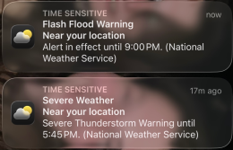
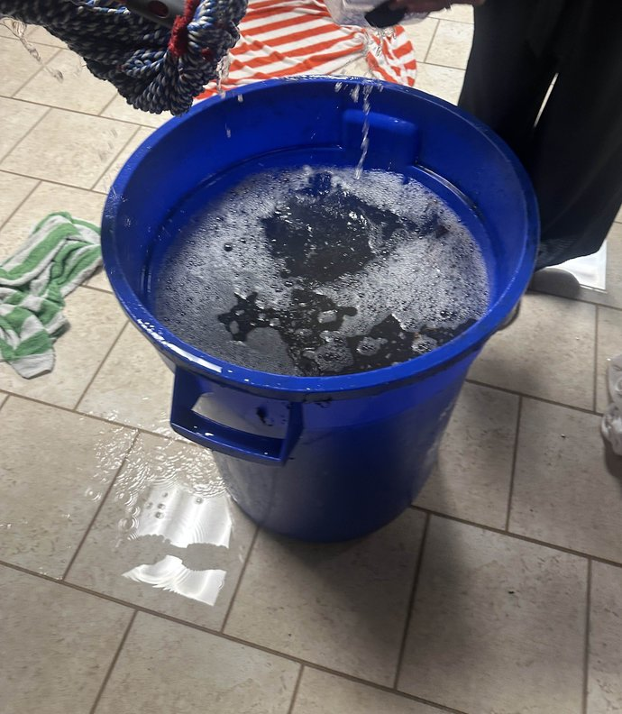

return
july 10th, 2025
i'm on vacation as i write this and some pretty silly stuff has happened. Usually i don't write in my blog unless i'm feeling sad, or i've made a realization, or whatever else, but right now i actually have something to talk about! so i don't have any excuses!
for some background information, i'm currently at an airbnb in illinois. my immediate and extended family all pitched in to afford it for about a week long vacation. However, on the second day of getting here, it begain raining.
i was texting my friend during most of this, so i will be supplimenting my recollection with the chatlog. (ignore my username please..!)
i was actually updating my website when i sent this message. i had music playing and the rain served as perfect ambiance for me to focus. i formatted my little nightmares page around this time, actually. but my work was interrupted again by a message on my phone.
oh.
no bueno.
well surely that's just a bad storm,, right?
i kept at my website, tweaking the margins and transparency. this ironically was one of the more productive sessions i've had recently.
the rain just kept pounding harder. little did i know in the moment, but my stepmom was about to burst in the room asking for help. so... she opened the door and told everybody to come to the basement to help deflood the basement.

i came downstairs to my family using any spare towels they could + buckets and dustpans to scoop, squeeze, and soak any water leaking through the basement windows away from the furniture. thankfully, there were a lot of people helping so nothing got too soaked and there was a sink nearby to dump the water into, but it still wasn't easy.
the cleaners / maintenance people were called and estimated to be about twenty minutes away. then the bucket began leaking. it was made for recycling, not water. we surrounded the base with towels before using other buckets to pail out any water remaining inside. soon after, i was free to head but upstairs and chill out.
i only found out while eating dinner later that night that the cleaners took probably an hour to get here. not the twenty minutes that was advertised.
and yeah so problem solved. this airbnb apparently had really good reviews so nobody would've expected this. it turns out the original cause of the issue was bad construction + the "egress windows" (i'm assuming the basement windows) didn't have a rain cover.
media suggestions
i'm gonna start a new section below every blog, and it's to highlight recent songs, videos, movies, etc that i've enjoyed and recommend.
AMAMA - Crumb is both a great album and amazing song. i actually considered having AMAMA (the song, not the album) autoplay upon entering my site (because it fits the mood) but i am not a paid member of neocities nor do i plan on self-hosting / switching hosts. i've always loved Crumb's music so when i saw they had a new album i nearly jumped out of my seat.
kpop demon hunters is one of my ew favorite movies. i will not say much about it because i don't want you to be spoiled and i am also running out of creative fuel for tonight but i will say that this movie has amazing music, humor, and art. the writing feels ever-so-slightly rushed at times, but that was due to the movie's plot being shortened after the original idea being finalized. i could be wrong. idk i linked the wikipedia page if you want to read more about it. highly recommend and you should watch it immediately (pirate it if you can't afford it, here you go shshsh...).